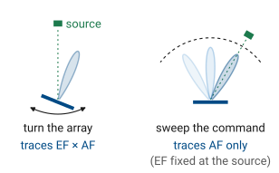
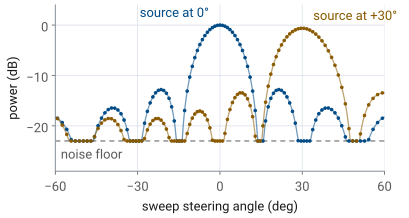
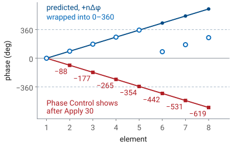
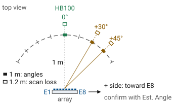
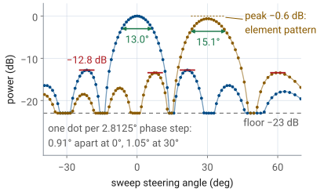
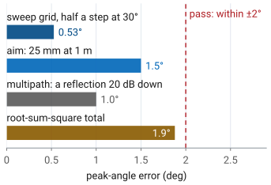

L18 Lab — Beam Steering#
Beam Steering
Two runs put the PHASER’s peak at \(30^\circ\): move the source, or apply a steer angle.
L18 Lab · Antennas, Phased Arrays, and Radar Systems · Dr. Neil Rogers
Slides
Learning Objectives
- I can implement beam steering on the ADALM-PHASER and verify the steered pattern against theory.
From Prediction to Measurement
Part 1, before today: the phase table, the beamwidths, and the error budget.
Part 2, today: two runs put the peak at \(0^\circ\), \(30^\circ\), and \(45^\circ\).
Part 3, after the lab: reconcile each measurement with its prediction.
In Lesson 18 we derived the steering law and used it to fill in a table of element phases for the PHASER’s eight-element array. The L18 Lab packet starts from that table: Part 1, the pre-lab you completed before class, redoes it at your HB100’s frequency, predicts the beamwidths, and sizes the error budget. Today you place the source at measured angles on a protractor arc, and also commands the peak to the same angles from the GUI, and records where the trace peaks, how wide it is, and what the GUI writes into Phase Control. Part 3, on your own before Lesson 19, reconciles those numbers with the predictions.
Part 1: The Steering Prediction
\(N = 8\), \(d = 14\ \text{mm}\), and \(d/\lambda = 0.491\) at \(10.525\ \text{GHz}\).
\(\theta_0\) |
\(\sin\theta_0\) |
\(\Delta\phi\) |
|---|---|---|
\(0^\circ\) |
0.000 |
\(0.0^\circ\) |
\(15^\circ\) |
0.259 |
\(45.8^\circ\) |
\(30^\circ\) |
0.500 |
\(88.4^\circ\) |
\(45^\circ\) |
0.707 |
\(125.0^\circ\) |
The array is fixed: \(N = 8\) elements, E1 to E8, on a \(d = 14\ \text{mm}\) pitch. The source is an HB100 Doppler module at a nominal \(10.525\ \text{GHz}\), so \(\lambda = 28.5\ \text{mm}\) and \(d/\lambda = 0.491\), with \(c = 3.00\times 10^8\ \text{m/s}\). Steering to \(\theta_0\) takes a progressive phase of
Lesson 18 worked the same table at the workshop’s \(10.3\ \text{GHz}\), where \(kd = 173.2^\circ\) and the \(30^\circ\) step is \(86.6^\circ\). At \(10.525\ \text{GHz}\) the step is \(88.4^\circ\), and Part 1 of the packet redoes the table at the frequency your kit reported in Lesson 17, because every phase in the lab depends on it.
Wrapped Element Phases
Element |
E1 |
E2 |
E3 |
E4 |
|---|---|---|---|---|
Wrapped (°) |
0.0 |
88.4 |
176.8 |
265.2 |
Element |
E5 |
E6 |
E7 |
E8 |
Wrapped (°) |
353.6 |
82.0 |
170.5 |
258.9 |
The \(30^\circ\) ramp; E6 to E8 wrap: \(442.0^\circ\) becomes \(82.0^\circ\).
The phase shifters produce a value between \(0^\circ\) and \(360^\circ\), so element E\((n+1)\), which is element \(n\) in Lesson 18’s numbering, gets \(n\Delta\phi\) wrapped modulo \(360^\circ\). Wrapping changes nothing physically at one frequency, because a phase shift of \(360^\circ\) is no phase shift at all. For \(\theta_0 = 30^\circ\) the eight values are these, and E6 through E8 are the ones that have wrapped:
Element |
E1 |
E2 |
E3 |
E4 |
E5 |
E6 |
E7 |
E8 |
|---|---|---|---|---|---|---|---|---|
Unwrapped ramp |
\(0.0^\circ\) |
\(88.4^\circ\) |
\(176.8^\circ\) |
\(265.2^\circ\) |
\(353.6^\circ\) |
\(442.0^\circ\) |
\(530.5^\circ\) |
\(618.9^\circ\) |
Wrapped |
\(0.0^\circ\) |
\(88.4^\circ\) |
\(176.8^\circ\) |
\(265.2^\circ\) |
\(353.6^\circ\) |
\(82.0^\circ\) |
\(170.5^\circ\) |
\(258.9^\circ\) |
Each entry is a multiple of the unrounded step, \(88.41^\circ\).
The Beam-Sweep Trace
The sweep steps the beam past a fixed source and plots power against steered angle.
The array factor depends on \(\sin\theta - \sin\theta_0\): the trace peaks at the source.
It records the array factor, scaled by the element pattern at the source.

The x-axis of the PHASER’s Rectangular plot is the angle the sweep steers to, not a measured arrival angle. With Lab Preset 1 loaded, the instrument steps the element-to-element phase one phase-shifter LSB, \(2.8125^\circ\), at a time, and plots each step at the angle that phase steers to; the steps past endfire collect at \(\pm 90^\circ\), which is why the edges of the trace look crowded.
The trace is a picture of the pattern because of Lesson 18’s “The Steered Pattern”: the array factor depends only on \(\sin\theta - \sin\theta_0\), and its magnitude is even, so power received from a source at \(\theta_{\text{src}}\) as the beam steps across \(\theta_0\) traces the same curve as the pattern of a beam steered at the source. It peaks where the steered angle equals the source angle.
Rotating the array in front of a fixed source would record a different quantity. Turning the array moves the source across the element pattern as well, so the rotation records the element pattern times the array factor (Lesson 16). The sweep holds the element pattern fixed at the source’s direction, so it records the array factor alone, scaled by the element pattern’s value there. That scale factor is what a peak-level comparison between two source positions measures. Every point of the sweep also uses a different set of element phases, so the beamformer’s own errors, phase quantization and gain imbalance, shape the trace.
Two Ways to Steer the Peak
Physical run: Phase Control at zero; the source moves to \(30^\circ\).
Commanded run: the source stays at boresight; Apply \(30\).
Both peak near \(30^\circ\), equally wide; only the physical run loses peak level.

The bench puts the peak at the same angles two ways. In the physical run, Phase Control holds zero, the sweep’s own ramp is the only steering, and the trace peaks at the source’s angle on the arc. In the commanded run, the source stays at boresight and Apply in the Beam Steering section loads per-element offsets that shift the trace: Apply \(30\) puts a boresight source’s peak at \(+30^\circ\).
The two traces have the same width, because both shift the same function of \(\sin\theta - \sin\theta_0\) to the same place. Their peak levels differ. In the physical run the source sits \(30^\circ\) off each element’s own boresight, and the element pattern lowers the whole trace by its roll-off at \(30^\circ\). In the commanded run the source never leaves the elements’ boresight, so the peak level matches the \(0^\circ\) trace. That difference is the measurement of scan loss (Lesson 18, “Scan Loss”).
The Sign in Phase Control
Element |
E1 |
E2 |
E3 |
E4 |
|---|---|---|---|---|
Phase Control |
0 |
−88 |
−177 |
−265 |
Element |
E5 |
E6 |
E7 |
E8 |
Phase Control |
−354 |
−442 |
−531 |
−619 |
Apply \(30\) writes \(-n\Delta\phi\), whole degrees, unwrapped.
The sweep adds \(+n\Delta\phi_s\); the sum vanishes at \(+30^\circ\).

When you type \(30\) into Steer Angle (deg) and press Apply, the GUI computes \(\Delta\phi\) from the Signal Freq on screen and writes \(-n\Delta\phi\) into the Phase Control boxes, rounded to whole degrees and not wrapped. At \(10.525\ \text{GHz}\) the boxes read 0, −88, −177, −265, −354, −442, −531, and −619. The sliders beside the boxes stop at \(\pm 180^\circ\); read the boxes.
The minus sign is deliberate. During a sweep the backend adds its own ramp, \(+n\Delta\phi_s\), to whatever Phase Control holds, so element \(n\) carries \(n(\Delta\phi_s - \Delta\phi_0)\). A boresight source needs no ramp at all, so the array points at it where \(\Delta\phi_s = \Delta\phi_0\), which is the plotted angle \(+30^\circ\). Apply is therefore the offset that makes a boresight source look like a source at \(+\theta_0\) on the sweep plot. On their own, with no sweep ramp added, the offsets would point the beam to \(-30^\circ\). To compare the read-back with the wrapped ramp, reduce it modulo \(360^\circ\): E6’s \(-442^\circ\) is \(278^\circ\), which is \(360^\circ - 82.0^\circ\).
The GUI computes \(\Delta\phi\) with \(c = 299792458\ \text{m/s}\), not the \(3.00\times 10^8\ \text{m/s}\) of our prediction, so one element can differ by \(1^\circ\) after rounding: our \(-n(88.41^\circ)\) gives \(-530\) for E7, and the GUI’s \(-n(88.47^\circ)\) gives \(-531\).
Predicted Sweep
The widget below is the prediction tool for today’s lab. Set the frequency to \(10.525\ \text{GHz}\), or at the bench to the value Find HB100 reports, and the knob to the source’s angle on the arc, which is where the trace should peak. Then read \(\Delta\phi\), the predicted half-power beamwidth, and the peak drop, and two rows of phases: the beam ramp \(+n\Delta\phi\) wrapped to \(0^\circ\) to \(360^\circ\), and what Phase Control shows after Apply at the same angle, the falling whole-degree offsets. Two things to notice before the bench: the dots mark the angles the sweep samples, one \(2.8125^\circ\) phase step apart, about \(1^\circ\) near broadside and wider toward endfire; and the beam widens as the peak moves away from broadside while the sidelobe structure stretches with it.
Part 2: Equipment and Setup
The kit on its stand, cabled to your laptop as in Lesson 17.
The HB100 on a tripod, \(1\ \text{m}\) out, at patch-row height.
A protractor arc centered on the array; \(+\theta\) is toward E8.

You need the ADALM-PHASER kit on its stand, connected to your laptop by the Ethernet cable as in Lesson 17; the HB100 on a tripod about \(1\ \text{m}\) from the array face, at the height of the patch row; and a protractor arc of \(1\ \text{m}\) radius centered under the middle of the array, between E4 and E5.
One meter is Lesson 17’s far-field distance for this array, \(2D^2/\lambda = 0.88\ \text{m}\) with \(D = Nd = 112\ \text{mm}\). Center the arc on the array, not on the board’s edge: an arc centered \(10\ \text{mm}\) off the middle of the array shifts the reference angle by about \(0.5^\circ\).
Lesson 18’s sign convention puts \(+\theta\) on the E8 end of the array, the end the wave reaches first. Confirm it on your kit before you record anything: with the source on the \(+\) side, Est. Angle reads positive.
Bring Up the Kit
Browse to your kit’s address from Lesson 17 (kit 03:
http://192.168.7.13:8080) and wait for the pill to read Connected.Place the powered HB100 \(1\ \text{m}\) out at \(0^\circ\) on the arc, facing the array.
Press Find HB100 and record the Signal Freq it reports in the packet.
Press Calibrate and wait for it to finish.
Press 1 Steering Angle under Lab Presets.
Set Rx Gain (dB) to 10.
Turn on Show Peak Angle Marker under Plot Options.
Press Start, and check the FFT tab for one tone near \(0\ \text{MHz}\), at least \(20\ \text{dB}\) above the floor.
Open the Rectangular tab.
This is Lesson 17’s order, for the same reason: Calibrate reads the frequency that Find HB100 stores, and it needs the source at boresight while it runs, or it bakes a steering ramp into the calibration offsets. The pill sits at the bottom right and changes from Checking… to Connected; Start stays grayed out until the backend is ready, and nothing plots until you press it.
The preset loads a uniform taper on E1 to E8, zeros Phase Control, sets 7 phase bits with Use Bits on and Signal BW at \(10\ \text{MHz}\), and opens the FFT tab. It leaves Signal Freq at the value Find HB100 stored, and it does not set Rx Gain (dB); the Pi starts at 30 dB, where Lesson 17 measured the receiver compressing, so step 6 sets the 10 dB reference.
On the FFT tab, one narrow tone stands well above the noise near \(0\ \text{MHz}\), within about \(\pm 1\ \text{MHz}\). If it is buried, re-aim the HB100 or press Find HB100 again.
Run 1: Move the Source
Press Reset under Phase Control.
With the source at \(0^\circ\), record Est. Angle, Peak Array Gain, and the half-power beamwidth in Table A.
Press Freeze to hold the boresight trace.
Move the HB100 along the arc to \(+30^\circ\), still \(1\ \text{m}\) out and facing the array.
Record the \(30^\circ\) row of Table A.
Move the HB100 to \(+45^\circ\) and record the last row.
Read the half-power beamwidth as the distance between the two angles where the trace falls \(3\ \text{dB}\) below its own peak. The sweep runs continuously and the button now reads Stop, so leave it running: the trace redraws on its own after you move the source. If Est. Angle reads near \(-30^\circ\), the source is on the negative side of the arc; move it across.
Run 2: Apply the Steer Angle
Move the HB100 back to \(0^\circ\) on the arc.
In Beam Steering, leave Taper on Uniform, enter 15 in Steer Angle (deg), and press Apply.
Record Est. Angle, Peak Array Gain, and the beamwidth in Table B.
Repeat for 30, and copy the eight Phase Control boxes into Table B.
Repeat for 45.
Press Reset under Phase Control before you leave the station.
Apply also rewrites Element Gains with the chosen taper, so leave it on Uniform. The offsets stay loaded until you press Reset, and they add to every sweep: with Apply \(30\) still loaded and the source moved to \(+30^\circ\), the trace would peak at \(90^\circ\). Step 21 leaves the kit at zero for the next lab.
Expected Numbers
Quantity |
Calculated |
Expect |
|---|---|---|
HPBW at \(0^\circ\), \(30^\circ\), \(45^\circ\) |
\(13.0^\circ\), \(15.1^\circ\), \(18.7^\circ\) |
each \(\pm 1^\circ\) |
Peak drop, source at \(30^\circ\) |
\(-0.6\) dB |
\(-0.6\) to \(-1.5\) dB |
Peak drop, Apply \(30\) |
0 dB |
0 dB |
First sidelobe |
\(-12.8\) dB |
\(-11\) to \(-13\) dBc |

The calculated column comes from the array factor for \(N = 8\) at \(d/\lambda = 0.491\). The \(1/\cos\theta_0\) broadening of Lesson 18 gives \(12.9^\circ/\cos 30^\circ = 14.9^\circ\) from the rule’s broadside width, and the exact array factor gives \(13.0^\circ\), \(15.1^\circ\), and \(18.7^\circ\). A sweep sampled about a degree apart reads each width to about a degree. dBc is dB relative to the main-lobe peak; the sweep’s floor sits about \(23\ \text{dB}\) below the peak, and the first sidelobes come up out of it at \(-11\) to \(-13\) dBc.
The peak drop is the element pattern’s roll-off, the scan loss of Lesson 18. Its ideal-element bound is
and \(-1.5\ \text{dB}\) at \(45^\circ\). A patch element rolls off faster, closer to \(\cos^{1.3}\theta\) to \(\cos^{1.5}\theta\) in power, so expect \(-0.8\) to \(-0.9\ \text{dB}\) at \(30^\circ\); Lesson 21 derives the element pattern. The commanded run keeps the source on the elements’ boresight, so its peak does not drop. The peak-drop rows are hardware measurements: the simulator has no element pattern and reads \(0.0\ \text{dB}\) in both runs.
No Hardware?
No hardware?
Open the hosted simulator at
livethisdream.github.io/phaser, the
same dashboard with nothing to install. At a station whose hardware has failed,
add ?sim=1 to the station’s URL or turn on Simulator Mode under
Configuration; an orange SIMULATION pill marks simulated data. With a
checkout of the Phaser repository, python phaser_headless.py --sim serves the
same page at http://localhost:8080.
The simulated source is fixed at boresight, so Run 1’s moves have no simulated version. Run 2 works as written, and it is the rehearsal in Part 1 of the packet: Apply \(30\) gives the trace a source at \(+30^\circ\) would, with Est. Angle \(29.6^\circ\) and a \(15^\circ\) beamwidth, and Phase Control shows the same offsets as the hardware. The simulator has no element pattern, so Peak Array Gain does not drop; it does not model Rx Gain (dB); its tone sits at \(-1\ \text{MHz}\); and Find HB100 and Calibrate run scripted scans.
Part 3: The Peak-Angle Error Budget
Sweep grid, half a step at \(30^\circ\): \(0.53^\circ\).
Arc placement and aim: \(1.5^\circ\).
Room multipath: \(1.0^\circ\).
Root sum of squares \(1.9^\circ\): a peak within \(\pm 2^\circ\) passes.

The measured peak angle will not equal the arc angle exactly, and the beamwidths will not equal \(13.0^\circ\) and \(15.1^\circ\) exactly. Three independent effects account for the difference, and Part 1 of the packet sized all three before the measurement.
Sweep grid. With Use Bits on, the sweep steps the element phase one \(2.8125^\circ\) LSB at a time. One step moves \(\sin\theta\) by \(2.8125^\circ/176.8^\circ = 0.0159\), which is \(0.91^\circ\) of angle at broadside and \(1.05^\circ\) at \(30^\circ\), widening as \(1/\cos\theta\). The trace holds no information between samples, so a peak read off it can be wrong by half a step, \(0.53^\circ\) at \(30^\circ\).
Arc placement and aim. At \(1\ \text{m}\), one degree of arc is \(17.5\ \text{mm}\), so a tripod placed by eye to within \(25\ \text{mm}\) gives a \(1.4^\circ\) error in the reference angle; centering the arc and pointing the module bring the budget figure to \(1.5^\circ\). This error is in the reference, not in the array.
Multipath. The bench, the walls, and the people nearby return copies of the tone. A reflection \(20\ \text{dB}\) below the direct path has an amplitude ratio of 0.1, so, depending on its phase, it raises or lowers the level by
a ripple on the main lobe that moves the apparent peak by up to about a degree. Absorber behind the array and a clear arc both reduce it.
Because the three are independent, they combine as a root sum of squares:
A peak within \(\pm 2^\circ\) of the reference meets the standard, and agreement to \(0.1^\circ\) would point to a mistake in the comparison rather than an unusually good measurement.
Why HB100 drift is not in the budget. The GUI sets the receiver from Signal Freq, and the SDR sees only a \(3\ \text{MHz}\) window. A source that drifts far enough to steer the beam measurably leaves the window and the tone disappears; Find HB100 finds it again. A drift that keeps the tone in view, under \(1.5\ \text{MHz}\), moves the beam by less than \(0.01^\circ\). The arithmetic is worth seeing once as a preview of Lesson 23’s beam squint: phases set for \(10.525\ \text{GHz}\) and observed at \(10.325\ \text{GHz}\) point a \(30^\circ\) beam \(0.6^\circ\) farther out, and a \(45^\circ\) beam \(1.1^\circ\) farther.
Lab Packet
The L18 Lab packet is one submission for the whole lab, turned in complete before Lesson 19. It has three parts:
Part 1, Pre-Lab (individual, before the lab period, because you need it at the bench): the prediction table at your kit’s frequency, what Phase Control will show, the beamwidths and the error budget, and a rehearsal of Run 2 on the hosted simulator.
Part 2, Measurements (your own kit’s data, recorded in class): Tables A and B, from Run 1 and Run 2.
Part 3, Writeup (individual, after the lab): reconcile the measurements with the predictions, and three analysis problems.
Summary: The Steering Law
Symbol / idea |
What it is |
Number to remember |
|---|---|---|
\(\Delta\phi = kd\sin\theta_0\) |
progressive element phase for a beam at \(\theta_0\) |
\(176.8^\circ\sin\theta_0\) at \(10.525\ \text{GHz}\) |
Wrapped phase |
\(n\Delta\phi\) modulo \(360^\circ\), what the shifter can produce |
E8 at \(30^\circ\): \(258.9^\circ\) |
Phase Control after Apply |
\(-n\Delta\phi\), whole degrees, unwrapped |
E8 at \(30^\circ\): \(-619\) |
Summary: The Trace
Symbol / idea |
What it is |
Number to remember |
|---|---|---|
Beam-sweep trace |
power against steered angle, source fixed |
peaks at the source angle, or at the Apply angle for a boresight source |
Sweep grid |
one \(2.8125^\circ\) phase LSB per step |
\(0.91^\circ\) at \(0^\circ\), \(1.05^\circ\) at \(30^\circ\) |
HPBW |
half-power width, broadens off broadside |
\(13.0^\circ\) at \(0^\circ\), \(15.1^\circ\) at \(30^\circ\) |
Scan loss |
element-pattern roll-off, physical run only |
\(-0.6\ \text{dB}\) bound at \(30^\circ\) |
Peak-angle budget |
grid, aim, multipath, root sum of squares |
\(1.9^\circ\); pass within \(\pm 2^\circ\) |
Looking Ahead
The L19 Lab uses today’s bearing skill: find the live HB100 among numbered boxes.
Lesson 20 derives the trace’s features: nulls, the \(-12.8\) dB sidelobe, and the beamwidth.
Keep Tables A and B; that derivation starts from them.
Lesson 19 and the fox hunt put today’s skill to work while it is fresh: the peak of the sweep is a bearing, and bearings from several stations cross at the source.
Today we compared measured beamwidths and sidelobes with values from Lesson 16’s closed form and Lesson 18’s broadening rule. Lesson 20 takes the closed form
and extracts every feature of the trace you just recorded from it: where the nulls fall, why the first sidelobe sits \(12.8\ \text{dB}\) down, how the beamwidth follows
and what changes when elements are switched off. Bring today’s traces to that lesson; the derivation is easier to trust with the measurement in front of you.